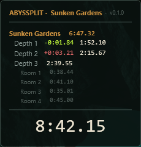
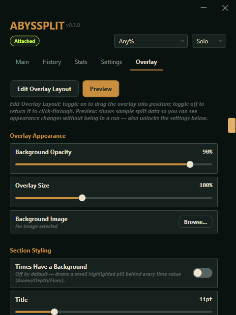

Getting started
Launch Abyssplit before or after Abyssus — it attaches automatically once the game is running, shown by the Attached badge next to the category picker. The overlay appears on top of the game once attached; the Configurator window is where you manage history, stats, and settings.

Abyssus needs to be running in Borderless or Windowed mode, not exclusive Fullscreen. Fullscreen mode bypasses Windows' own compositor, which hides every overlay — not just this one, the same is true of Discord/Steam overlays — behind the game instead of on top of it. If the overlay isn't showing up, this is almost always why; switch Abyssus's Window Mode setting and it should appear immediately.
On first launch you'll be asked to accept the Terms of Use — a one-time step per version. Windows may also show a SmartScreen warning the first time you run the installer or portable exe — expected for an unsigned app, not a sign anything is wrong; click More info, then Run anyway.
Abyssplit also checks once at startup for a newer release, and shows a dismissible banner at the top of the Configurator if one's available. Times recorded on an outdated version may not be accepted for leaderboard submission, so it's worth updating when prompted.
The Main tab
Timers — three run side by side:
- IGT — the game's own raw, unmodified run-time stat.
- Load-Free — IGT with loading-screen time subtracted out.
- Load+Cutscene-Free — Load-Free with cutscene time subtracted too. Splits and personal bests are built on this number.
Splits — a live, floor-by-floor and room-by-room breakdown of the current run, each row showing its Personal Best (or NEW PB the moment one is beaten) and a +/- delta against whatever comparison source you've picked on the Settings tab.
Below the splits list: your best full-run time, Sum of Best (the theoretical fastest run if every floor's best segment happened in the same attempt), and your previous run's time.
Category / player count (top right) — switch between Any%, All Bosses, True Ending, and their Glitchless variants, each crossed with Solo/Duo/Trio/Quad. Every category+player-count combination keeps its own independent personal bests and history. Locked while a run is in progress.
Reset Run — manually resets the timers and split list. Also locked mid-run.
The History tab
Every attempt you've made (finished or not) with its final time. Select one to see its full per-floor Details breakdown. Four actions per attempt:
- Compare — sets it as your Specific Run comparison source (Settings tab).
- Share — exports it as an
.abysplitfile (IGT, Load-Free, and Load+Cutscene-Free times and full per-floor splits included) after asking for a runner name, so you can send it to someone else to race, or submit it for record verification. - Copy — copies a quick plain-text summary to the clipboard instead — lighter than Share's full file, for pasting a result straight into Discord or chat.
- Delete — removes it from history permanently.
If Abyssplit or the game crashes mid-run, the attempt isn't lost — it gets recorded as Incomplete the next time you launch, using whichever floors it had already completed (anything from the floor you were still on when it crashed isn't recoverable, same as any checkpoint-based recovery).
The Stats tab
- Per-Location Stats — average/median/best/worst segment time for every floor and boss you've reached, plus a consistency (standard deviation) figure.
- PB Progression — a small chart plus a list of every point your best full-run time improved. The chart needs at least two completed runs to draw a line. Scale labels on the left show the slowest and fastest times on the line, and each PB is marked with a dot — hover one to see its date and time without cross-referencing the list below.
- Attempts Reached — how far you got, across every attempt.
All three are scoped to whichever category and player count is currently active.
The Settings tab
Session Behavior
| Setting | What it does |
|---|---|
| Pause Stops Time | Off by default — pausing the game doesn't freeze the adjusted timers. Turning it on will make times ineligible for leaderboard submission unless the ruleset you're running under explicitly allows pausing. |
| Auto-Reset on Lobby Return | On by default — timers reset the moment you're back in the lobby, ready for the next attempt. |
| Play Sound on New PB | On by default — a short sound plays when you beat your full-run personal best (not per-floor bests, which fire too often for a sound to make sense). Turn off if you'd rather it stay silent. Custom sound files are planned for a future update. |
| Software Rendering | On by default — avoids overlay stutter/freezes when the game and overlay are competing for GPU time. Turn off only if your bottleneck is CPU instead. Requires an app restart. |
| Run at Startup | Off by default — launches Abyssplit, minimized to the tray, when you sign in to Windows. Works the same whether you're running the installed copy or the portable exe — it points at wherever the app is running from right now. If you're on the portable exe, moving, renaming, or deleting that file afterward (e.g. replacing it with a newer download) will silently break this until you re-enable it from the new location. |
| Always Show Overlay | Off by default — the overlay only appears while attached to the game, or while the Configurator window is open. Minimizing to the tray hides it too, unless you're attached. Turn this on to keep the overlay visible all the time regardless. |
| Reset Run Hotkey | Off by default — Ctrl+Alt+R resets the run from anywhere, even while the game (or anything else) has focus, so you don't have to alt-tab between attempts. Same "only outside a run" protection as the Reset Run button — it won't fire mid-run. Not currently remappable. |
Display
Toggle whether the IGT, Load-Free, and Load+Cutscene-Free timer cards show on the Main tab and overlay, and whether Previous Segment shows (controls both the overlay's Prev. Run row and the line below the Main tab's split list).
History Storage
| Setting | What it does |
|---|---|
| Auto-Delete Old Runs | On by default — keeps history from growing forever. Your PB run is never deleted. Turn off to keep every attempt permanently. |
| Keep Up To | How many attempts to retain, per category and player count — practicing Any% doesn't trim your All Bosses history. |
| Delete | Oldest removes your earliest attempts first. Slowest removes your worst times first, keeping recent history. |
Personal Best
Delete Recorded PB — only shown if you have one. A safety net: if a bug ever records an impossible time, delete it here to revert to your next-fastest completed run.
Split Comparison
| Setting | What it does |
|---|---|
| Compare Splits Against | Best — your all-time best per floor. Previous — your immediately prior attempt. Specific Run — a past attempt you choose below. Imported File — a split file someone shared with you. |
| Specific Run to Compare Against | Only used when Compare Splits Against is set to Specific Run. |
| Import Split File | Load a .abysplit file someone shared with you to race against it — automatically sets the comparison source to Imported File. |
Support
Check for Updates re-runs the update check on demand — the app also checks once automatically at startup, but this always reports back (up to date, a newer version found, or the check itself couldn't complete) rather than staying silent unless something's actually available.
Report a Bug opens a pre-filled GitHub issue with a recent log excerpt attached, and reveals today's full log file in case more detail is needed. About shows the app version and a link to the project repository.
The Overlay tab
Edit Overlay Layout — toggle on to drag the overlay into position in-game; toggle off to return it to click-through (mouse input passes straight to the game). If you last positioned the overlay on a second monitor that isn't connected the next time you launch, it automatically resets to a default position instead of opening somewhere unreachable.
Preview — shows sample split data on the overlay so you can see appearance changes without being in a real run. Also unlocks every setting below it.
Overlay Appearance
- Background Opacity / Overlay Size — sliders, live preview.
- Background Image — an optional custom image behind the overlay, in place of the plain background.

Section Styling
- Times Have a Background — off by default; draws a small highlighted pill behind every time value.
- Title / Biome / Depth / Floor — independent font size and text color for each section. Title is the overlay's static "ABYSSPLIT · {biome}" header (which always ends with the running app version, not customizable); Floor is the innermost per-room breakdown.
Reset to Default reverts every appearance setting above to its shipped default in one click.
Split Display
| Setting | What it does |
|---|---|
| Split Detail Level | Total — no split list, just the timer. Per-Depth — one row per depth. Per-Room — also breaks out each depth's rooms. |
| List Overflow Behavior | Collapse — finished biomes fold to one line. Scroll — nothing folds, fixed-height, auto-scrolls to the current segment. Full List — nothing folds, no height cap. |
Both are locked while a run is in progress.
Running in the background
- Minimize to tray — minimizing the window hides it to a system tray icon instead of the taskbar. Right-click for Show Abyssplit, Reset Run, and Exit; double-click to restore.
- Run at Startup (Settings tab, above) — launches straight to the tray on login.